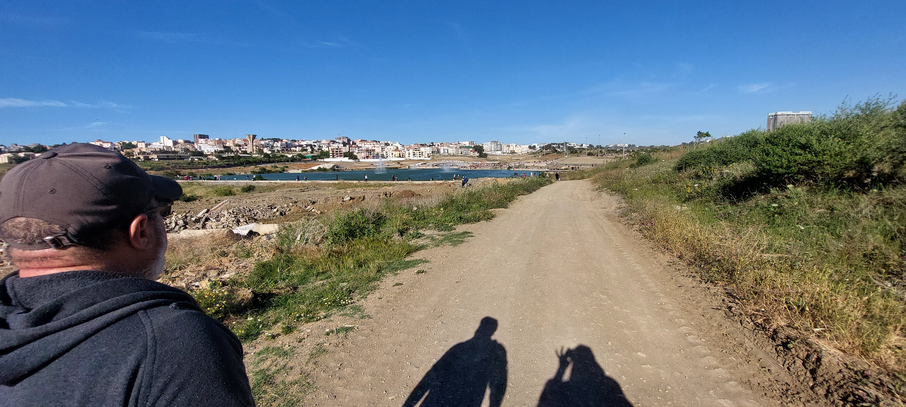

Le poète et sa muse s’amusent
dans l’atelier secret du soir,
Dans un jardin
où les mots s’allument ;
Elle sourit,
il perd ses vers,
Mais persévère
Et le printemps
devient l’univers.
lui dépose des mots
comme des braises
sur le silence,
Elle est muse,
il est poète,
Deux âmes folles,
deux silhouettes ;
elle souffle dessus
et soudain la nuit s’embrase.
Un regard suffit,
un rire encore,
Et leurs silences
parlent plus fort.
Entre eux,
aucune frontière,
seulement ce jeu de regards
qui ouvrent des portes
que le temps croyait murées.
Elle joue
avec les rimes légères,
Il lui répond
de phrases sincères ;
Elle est la source
qui déborde du rocher,
lui,
le voyageur assoiffé
de lumière.
Entre leurs lèvres
naît un refrain,
Un doux vertige,
un trouble divin.
Elle cueille une étoile
au bord de ses lèvres,
il la transforme
en constellation.
La nuit descend,
complice et discrète,
Et garde le secret
du poète :
Quand sa muse vient
troubler ses pensées,
Même ses vieux désirs
semblent renaître.
Ils jouent
avec le vertige,
avec les ombres,
avec ces désirs
qui dormaient
sous la cendre
et se réveillent
comme des oiseaux
après un long hiver.
Alors ils dansent
avec la lune,
Sans autre loi
que leur fortune ;
La muse rit.
Lui,
de ses mots
fait un écrin,
Elle,
de son sourire,
un chemin.
Le poète oublie
qu’il avait juré
de ne plus écrire.
Et tant qu’au matin
l’amour s’amuse,
Le poète chantera
sa muse ;
Car certains bonheurs,
doux et malicieux,
Font de deux cœurs
un seul jeu merveilleux.
Alors la nuit devient page,
le silence devient musique,
et leurs deux solitudes,
un instant,
s’amusent à croire
qu’elles n’ont jamais été séparées.
Djamel Metref
At Yenni le 15 Août 2026 
← Tous les poèmes
Le poète et sa muse s’amusent
Écriture et poésie · Amour et désir